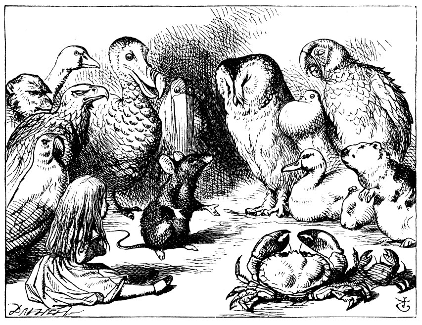

Sometimes, just some times, we need to go 3D with our charts. Especially when we may have more than one variable, or if we wish to show the behaviour of a function of multiple variables, or show vector fields and so on. At such times making the graph 3D and interactive may add real value and aid in comprehension